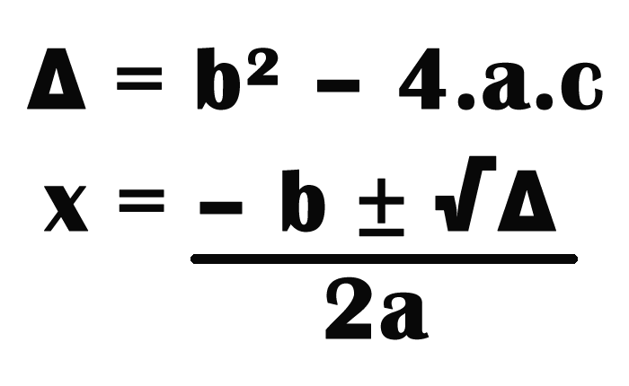
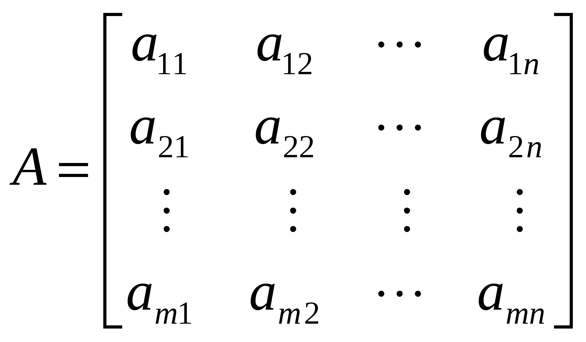

Fundamentos de Matemática Elementar
Ministrada pela Prof. Andrea Piranhe da Silva, a matéria Fundamentos de Matemática Elementar tem como objetivo repassar os principais conteúdos aprendidos em ensino básico, fundamental e médio, sendo discutidos os conceitos básicos de matemática e relembrados conteúdos como: Conjuntos Numéricos, Regra de três simples, porcentagem, potenciação, notação cientifica e outros
A matemática é de extrema importância na programação,utilizada desde em um site e-commerce, que possui a necessidade de realizar contas como adição, subtração, divisão e multiplicação na realização das compras, como em seu banco de dados, onde há a necessidade de comandos que exigem operadores aritméticos. Não há como negar a importância da mesma, tanto na área tecnológica, como em qualquer outra área
Confira alguns exemplos da matéria ensinada em aula
Fórmula de Bhaskara
Neste exemplo é mostrado a fórmula de Bhaskara, utilizada para resolver equações do segundo grau, pois encontra as raízes reais de uma equação do segundo grau fazendo uso apenas de seus coeficientes.
Para resolver uma equação de segundo grau utilizando a fórmula de Bhaskara é necessário que a equação seja escrita desta maneira: ax2 + bx + c = 0
Matriz
Uma matriz é uma estrutura multidimensional a qual pode ser representada por uma tabela de dupla entrada na forma vista ao lado:
M = Número de linhas da matriz A
N= Número de colunas da matriz A
M x N = Dimensão da matriz A